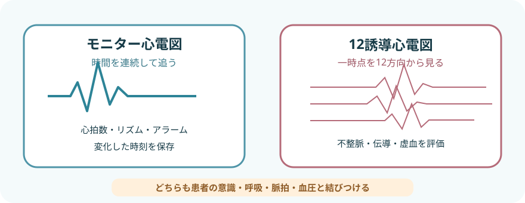
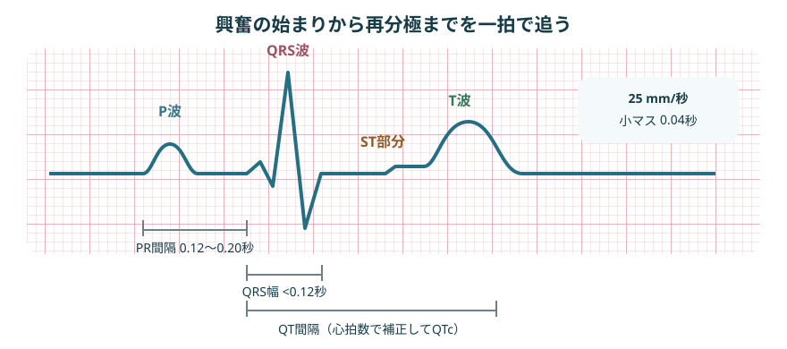
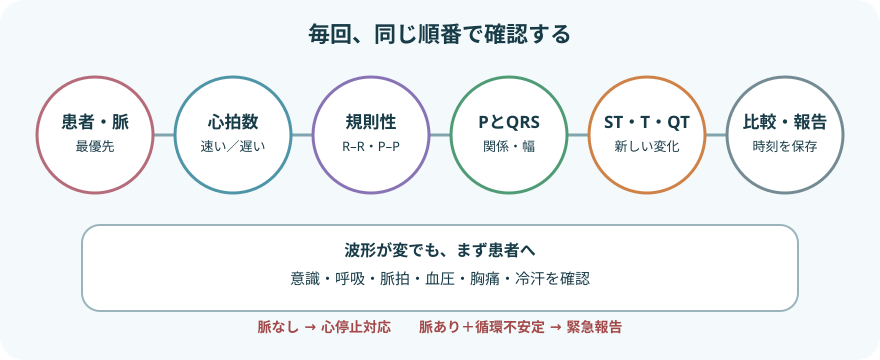

モニターと12誘導は役割が違う

- モニターは変化を知らせる。
- 12誘導はその時点の電気活動を多方向から記録する。
- どちらも患者評価の代わりにはならない。
- モニター心電図で早く捉える変化
- 徐脈
- 頻脈
- 不整脈
- 選択した患者のST・QT変化
心拍数・リズムを連続監視する。
- 12誘導心電図の評価対象の例
- 不整脈
- 伝導障害
- 虚血・梗塞
10個の電極から12方向を同時に記録する。
- 波形が変わったら：患者と脈拍を確認し、必要時は記録を保存して12誘導心電図へつなぐ
モニター心電図を装着する
- 本人・適応・基準波形を確認開始前の確認
- 患者
- 監視目的
- 既往
- 不整脈
- 症状
- ペースメーカー
- 指示された誘導とアラーム条件
- 皮膚を整える
- 拭き取るもの
- 汗
- 皮脂
- 汚れ
必要時は体毛を処理する。
- 装着を避ける場所
- 皮膚障害
- 創
- 骨突出
- 乳房の上
平らな筋肉の少ない場所を選ぶ。
- 端子記号で接続する
- 確認する端子記号の例
- RA/R
- LA/L
- LL/F
- RL/N
- V/C
- AHA方式とIEC方式では色が異なるため、色だけで判断しない。
- 波形と患者を照合する
- 心拍数を実測脈拍と比べ、下記が見やすい誘導を選ぶ。誘導選択で見やすさを確認
- P波
- QRS
- 基線
- ケーブルの牽引と電極の浮きを直す。
- 心拍数を実測脈拍と比べ、下記が見やすい誘導を選ぶ。
- 個別にアラームを設定する
- 個別アラーム設定の基準
- 現在の心拍数
- 病態
- 既知の不整脈
上記の基準に合わせて設定するもの- 心拍数の上下限
- 不整脈アラーム
- 不要なアラームを放置・一律停止しない。
- 開始時のストリップを保存する開始時のストリップに残すこと
- 誘導名
- 日付・時刻
- 心拍数
- 症状
- 体位
入院中の変化と比較できる基準にする。
II誘導だけで全部は分からない
- II誘導はP波とQRSが見やすいことが多く、基本リズムの観察に使われる
- V1に近い修正胸部誘導はP波や心室性波形の観察、V5に近い誘導はST変化の観察に使われることがある
- 修正誘導の例
- MCL1
- MCL5
- NASA
標準12誘導と同じ波形ではない。
- 誘導名と電極位置を記録し、途中で変更したら新しい基準波形を残す
12誘導心電図を記録する
記録前
- 記録前の確認
- 本人
- 目的
- 症状の発症時刻
- 安静が保てるか
- 上半身と四肢を露出する理由を説明し、カーテンやタオルで羞恥心へ配慮する
- 原則として仰臥位で安静にし、会話や四肢の力を抜いてもらう
- 皮膚を清拭し、必要時は軽く擦過・除毛して接触を良くする
- 標準記録条件
- 紙送り速度25 mm/秒
- 感度10 mm/mV
変更時は記録へ残す。

- 胸骨角から第2肋骨を触れ、肋間を数える。
- V1・V2を高く貼ると波形が変わり、偽の異常所見につながる。
- V1
第4肋間・胸骨右縁。
- V2
第4肋間・胸骨左縁。
- V4
- 第5肋間・左鎖骨中線。
- V3より先に位置を決める。
- V3
V2とV4の中間。
- V5
V4と同じ水平線上・左前腋窩線。
- V6
V4と同じ水平線上・左中腋窩線。
四肢電極
- RA・LAは左右の上肢へ装着する。
- RL・LLは左右の下肢へ装着する。
- できるだけ左右対称かつ肩・股関節より末梢へ装着する。
- 骨突出や大きな筋肉を避ける。
- 体動対策で体幹へ移した記録は標準肢誘導と同等ではない。
- 乳房が電極位置を覆う場合も、乳房の上ではなく解剖学的位置の皮膚へ装着する。
- 四肢電極を体幹へ移すと標準12誘導と波形が変わるため、標準記録との連続比較に用いない。
- やむを得ない体位・位置変更は記録する。
記録品質を確認する
- 正しいか確認する記録情報
- 氏名
- 日時
- 症状・発症時刻
- 体位
- 記録条件
- 記録の品質
- 全誘導が記録されている
- 基線が安定している
- 波形が切れていない
- 校正波形が10 mm/mV、紙送り速度が25 mm/秒になっている
- ないことを確認する装着の誤り
- 電極の左右逆転
- 端子違い
- 胸部誘導の位置ずれ
- 過去波形との比較前に同じか確認
- 体位
- 電極位置
- 感度
- 自動解析結果は参考にとどめ、波形と臨床所見を人が確認する
P波からT波までをつなげる

- 正常値だけを暗記せず、電気活動の流れを順に追う。
- どこから興奮が始まったかを確認する。
- 心室へ伝わり、再分極したかを確認する。
- P波
- 心房の脱分極。
- 形がそろうか、各QRSの前にあるかを見る。
- PR間隔
- 心房から房室結節・His束を通って心室へ伝わる時間。
- 成人の目安は0.12〜0.20秒。
- QRS波
- 心室の脱分極。
- 成人では0.12秒未満が一つの目安。
- 幅
- 形
- 早く出た波形
- 脱落
- ST部分・T波
- 心室の再分極を反映する。
- 新しく出現した再分極の変化
- 上昇
- 低下
- 陰転化
症状と12誘導で評価する。
- QT間隔
- 心室の脱分極から再分極まで。
- 心拍数で補正したQTcを用いるが、自動値だけで決めない。
- 小マス1 mmは、25 mm/秒では0.04秒。
- 大マス5 mmは0.20秒。
- 感度10 mm/mVでは縦10 mmが1 mV。
波形は同じ順番で読む

- 最初は必ず患者。
- 波形が整っていても脈がなければ心停止であり、激しい波形でも体動によるアーチファクトの場合がある。
- 患者・脈拍患者の評価
- 意識
- 呼吸
- 頸動脈などの脈拍
- 血圧
- 胸痛
- 動悸
- 失神
- 冷汗
- 心拍数
- 規則的なら300÷R–R間の大マス数。
- 大きく不規則なら10秒間のQRS数×6を目安にする。
- 規則性一定か確認する間隔
- R–R間隔
- P–P間隔
突然出現する拍の変化- 早い
- 遅い
- 抜ける
- P波とQRSの関係P波とQRSの確認
- P波の有無
- P波の形
- P波とQRSとの対応
- PR間隔
- QRS幅
- ST・T・QTST・T・QTの確認
- 基準波形からの変化
- 新しいST偏位
- T波変化
- QTc延長
- 比較・保存・報告比較対象
- 発症前
- 前回
- 別誘導
- 変化した時刻を保存する。
- 症状・循環所見と一緒に報告する。
よく出会うリズムの整理
洞調律
- 同じ形のP波が各QRSに先行し、PR間隔とR–R間隔がほぼ一定。
- 成人安静時の心拍数60〜100回/分は一つの目安だが、症状と背景で判断する。
心房細動（AF）
- 一定したP波がなく、R–R間隔が絶対的不整。
- 心房細動で確認すること
- 初発時刻
- 心拍数
- 血圧
- 胸痛
- 呼吸困難
- 失神
- 抗凝固薬
上室期外収縮（PAC）
- 予定より早いP波と、それに続くことが多いQRS。
- 上室期外収縮で確認すること
- 連発
- 症状
- 基礎疾患
- 電解質や薬剤との関連
心室期外収縮（PVC）
- P波に先行されない早い幅広QRSが基本。
- 心室期外収縮で確認すること
- 頻度
- 単源性・多源性
- 連結期
- 二段脈・三段脈
- 連発
- R-on-T
- 症状
- 心室起源の拍が3拍以上連続する波形はVTとして扱い、持続時間と脈拍・循環動態を直ちに評価する。
「PAF」と記録する
- 発作性心房細動はPAF（paroxysmal atrial fibrillation）。
- 口頭の「パフ」だけでは伝達が曖昧になるため、記録では正式名称またはPAFを使う。
波形より先に患者を救う
反応がなく、正常な呼吸と脈拍がない
- 応援と院内急変対応を要請し、胸骨圧迫を開始する
- モニター・除細動器を装着し、VF／無脈性VTか、PEA／心静止かを判定する
- VF・無脈性VTはショック適応。
- PEA・心静止はショック非適応。
- 波形が見えても脈がなければPEAの可能性がある。
- モニターの心拍数を脈拍とみなさない。
脈拍があっても緊急報告する所見
- 頻脈・徐脈に伴う緊急徴候
- 低血圧
- 意識変容
- ショック徴候
- 虚血性胸部不快感
- 急性心不全
- 上記の徴候を伴う頻脈・徐脈は緊急報告する。
- 脈拍がある場合も報告を遅らせない。
- 緊急報告するリズムの変化
- 持続性VT
- 多形性VT
- 著しい徐脈
- 高度房室ブロック
- 新しい長いポーズ
- 新しいST上昇・低下やT波変化に伴う症状の例
- 胸痛
- 冷汗
- 呼吸困難
これらなどの症状を伴う場合は緊急報告する。
- QTc延長に伴う所見
- PVC
- 失神
- 多形性VT
- QTcが著しく延長した、または基準から大きく延び、上記の所見がある場合は緊急報告する。
- 心静止に見えるときの装置確認
- 電極脱落
- ケーブル
- 感度
- 別誘導
患者評価と蘇生を遅らせずに確認する。
- 急性冠症候群が疑われる症状では、モニター波形だけで除外せず、迅速に12誘導心電図を記録する。
アーチファクトを疑うとき
- 電極
- 乾燥
- 浮き
- 汗
- 体毛
- 皮脂
- 皮膚の動き
- 患者
- 体動
- ふるえ
- 悪寒
- 筋緊張
- 会話
- 歯磨き
- 機器
- ケーブル断線
- 端子違い
- 電気機器の干渉
- 見分け方
- 患者と脈拍を確認する。
- 別誘導とパルスオキシメータ脈波を比べる。
- 電極とケーブルを順に点検する。
- 本物か迷う波形と一緒に残すこと
- 発生時刻
- 患者の状態
- 行った確認
迷う波形は消さずに保存する。
報告・記録
- 波形の記録
- 発見時刻
- 誘導名
- 心拍数
- 規則性
- P波
- QRS幅
- ST・T・QTの変化
- 患者所見の記録
- 意識
- 呼吸
- 脈拍
- 血圧
- SpO₂
- 胸痛
- 動悸
- 失神
- 冷汗
- 尿量
- 背景の記録
- 発症前後の状況
- 活動
- 処置
- 薬剤
- 電解質
- 酸素
- ペースメーカー
- 経過・比較の記録
- 基準波形・過去波形との違い
- 持続時間
- 自然停止・再発の有無
- 実施・報告の記録
- 12誘導心電図の実施時刻
- 保存したストリップ
- 報告先
- 指示と対応
出典
- American Heart Association「Update to Practice Standards for Electrocardiographic Monitoring in Hospital Settings」
- AHA/ACCF/HRS「Recommendations for the Standardization and Interpretation of the Electrocardiogram: Part I」
- 日本循環器学会／日本不整脈心電学会「2022年改訂版 不整脈の診断とリスク評価に関するガイドライン」
- 日本循環器学会「ガイドラインシリーズ」
- American Heart Association「2025 Guidelines: Adult Advanced Life Support」
- Abobaker A, Rana RM. V1 and V2 precordial leads misplacement and its negative impact on ECG interpretation. 2021.
- Philips IntelliVue Patient Monitor Instructions for Use「ECG Lead Placements」